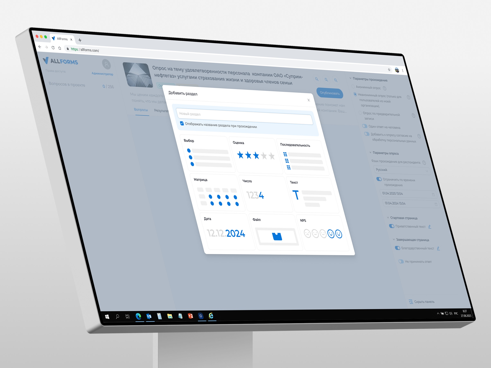
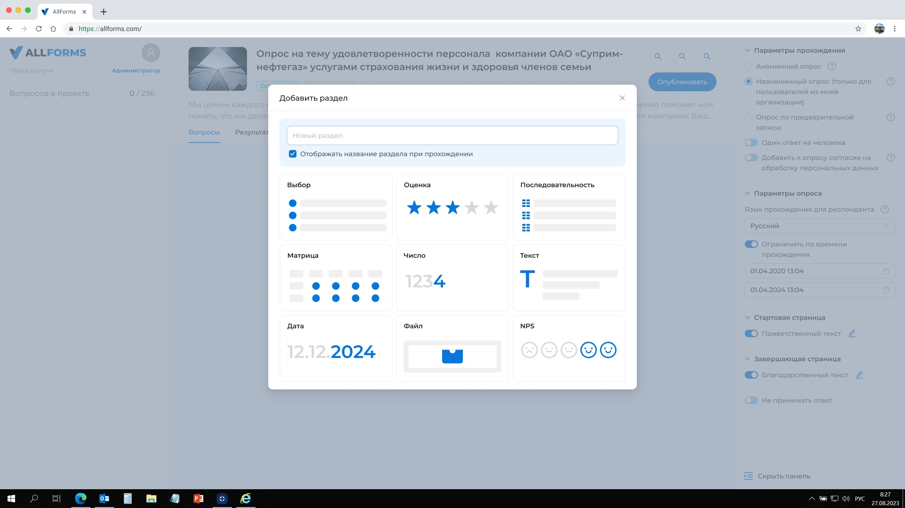
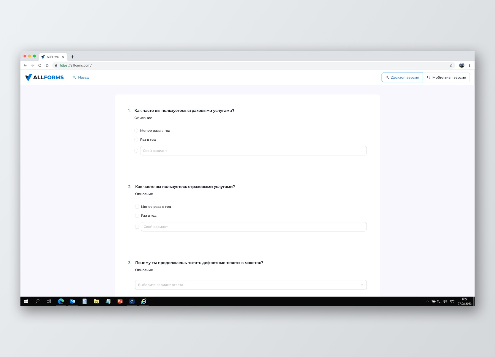
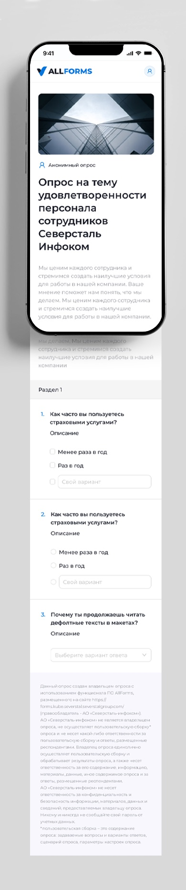
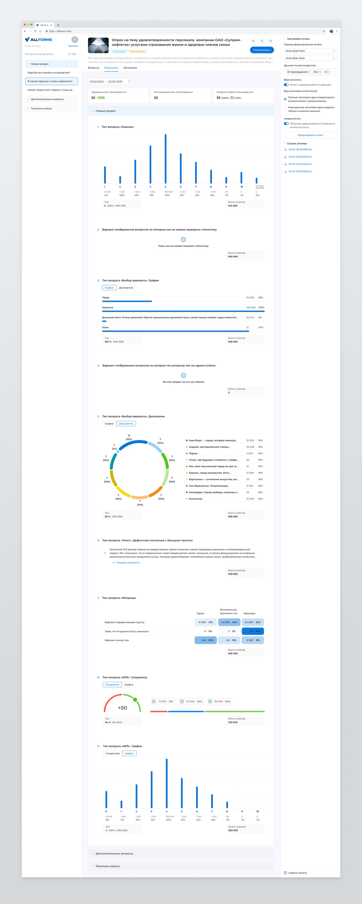

−30%
времени на создание типового опроса
Северсталь · внутренняя платформа · опросы и тесты
Внутренняя платформа, на которой подразделения холдинга создают опросы, тесты и анкеты. Задача — закрыть сценарии внешних сервисов так, чтобы пользователи ничего не потеряли при переходе.
Подразделения собирали опросы во внешних конструкторах, а внутренние данные холдинга должны оставаться внутри. AllForms должен был закрыть их сценарии. Фичи брали в работу по запросам самых настойчивых пользователей.
Инициировал редизайн, собрал бэклог из запросов заказчиков и проверил его интервью. Спроектировал конструктор, прохождение и отчёты, изменил процесс отбора фич.
Брать фичу в работу только после интервью и перейти на платную Ant Design Pro, обосновав это оценкой часов разработки.
Платформа заменила Google Forms в холдинге: −30% времени на создание опроса, 80% довольных авторов.

01 · Результаты
времени на создание типового опроса
авторов довольны конструктором
времени от готового макета до релиза фичи
типов исследований запущено на платформе
02 · Контекст и задача
03 · Исследование
Выбор, оценка, шкала, матрица, число, текст, дата, файл, NPS. Время уходило на поиск нужного типа вопроса и его настройку.
Что это значит для дизайна
Окно «Добавить раздел» с визуальными превью всех типов вопросов: тип выбирается по картинке, а не по названию в списке.
Сотрудники производства часто работают без компьютера, а ссылку на опрос получают в мессенджере.
Что это значит для дизайна
Прохождение опроса спроектировано с мобильного: один вопрос — один экран, крупные варианты ответов.
Автор собирает результаты, чтобы показать их руководству, и раньше выгружал данные и строил графики вручную.
Что это значит для дизайна
Встроенный отчёт с графиками по каждому вопросу, который можно сразу показать.
Часть «срочных» запросов на интервью не подтверждалась у других подразделений: проблема была у одной команды, а не у всех.
Что это значит для дизайна
Правило для бэклога: фича идёт в работу после интервью с пользователями из разных подразделений, приоритет — по частоте и цене проблемы.
Как я рассуждал
Сравнивать нужно не с собой, а с Google Forms. Пользователи не знают, как устроен внутренний продукт, зато каждый день пользуются Google Forms и Яндекс Формами. Поэтому я разобрал сценарии конкурентов и считал задачу решённой, только когда переход не ощущается потерей.
Громкость запроса — не частота проблемы. Бэклог формировался из входящих просьб, и выигрывал тот, кто настойчивее. Я не стал спорить с заказчиками, а предложил правило: крупная фича идёт в работу после интервью в нескольких подразделениях. Спор мнений превратился в разговор о данных.
Руководству нужны деньги, а не «удобно дизайнерам». Переход на платную Ant Design Pro я защищал не эстетикой, а оценкой часов разработки на сложные компоненты, которые в Pro уже есть.
04 · Развилки
05 · Решение

КонструкторОкно добавления вопроса



ОтчётГотов показать руководству
06 · Ретроспектива
Без базового значения 80% — это уровень, а не прирост. Чистый «до» сделал бы результат убедительнее.
Команда видела, что после тестов на прототипах переделок меньше, но без разметки задач это не показать числом.
Главный вывод: во внутреннем продукте самая дорогая ошибка — делать фичи для того, кто громче просит. Интервью перед каждой крупной фичей превратили спор мнений в разговор о данных.
Другие кейсы
Контакты
Ищу роль Senior Product Designer. Расскажу, как выстроить отбор фич через исследования, не поссорившись со стейкхолдерами.